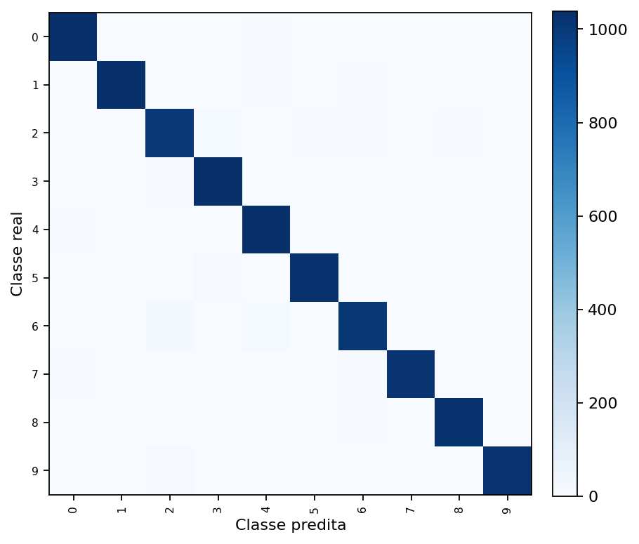
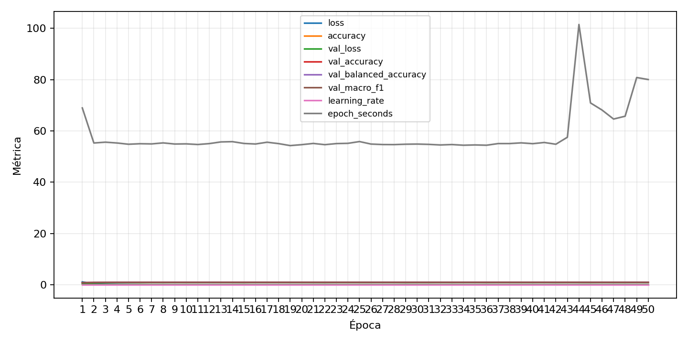

| n_samples | 10500 |
|---|---|
| loss | 0.12661579251289368 |
| accuracy | 0.9765714285714285 |
| balanced_accuracy | 0.9765714285714286 |
| macro_f1 | 0.9765961232060574 |


| Índice | Classe | Suporte | Precisão | Recall | F1 |
|---|---|---|---|---|---|
| 0 | 0 | 1050 | 0.9800759013282733 | 0.9838095238095238 | 0.981939163498099 |
| 1 | 1 | 1050 | 0.9847182425978988 | 0.981904761904762 | 0.9833094897472581 |
| 2 | 2 | 1050 | 0.9535104364326376 | 0.9571428571428572 | 0.9553231939163498 |
| 3 | 3 | 1050 | 0.963821892393321 | 0.9895238095238095 | 0.9765037593984962 |
| 4 | 4 | 1050 | 0.9618959107806692 | 0.9857142857142858 | 0.9736594543744119 |
| 5 | 5 | 1050 | 0.9875239923224568 | 0.98 | 0.9837476099426385 |
| 6 | 6 | 1050 | 0.9636711281070746 | 0.96 | 0.9618320610687023 |
| 7 | 7 | 1050 | 0.9951314508276533 | 0.9733333333333334 | 0.9841116995666827 |
| 8 | 8 | 1050 | 0.9818702290076335 | 0.98 | 0.98093422306959 |
| 9 | 9 | 1050 | 0.995136186770428 | 0.9742857142857143 | 0.9846005774783446 |
{"adapter":"kmnist","balance_mode":"all_raw","class_names":["0","1","2","3","4","5","6","7","8","9"],"dataset":"kmnist","dataset_options":{},"dataset_root":"/home/msduda/datasets-tcc/kmnist","native_channels":1,"normalization":"unit_interval","num_classes":10,"protocol":{"checkpoint_monitor":"val_macro_f1","dtype_policy":"mixed_float16","early_stopping":{"patience":50,"restore_best_weights":true},"evaluation_augmentation":false,"input_channels":"native","optimizer":"Adam","pretrained_weights":false,"reduce_lr_on_plateau":{"factor":0.3,"min_lr":1e-07,"patience":50},"resize":"proportional_padding","test_time_augmentation":false,"training_from_scratch":true},"seed":42,"source_fingerprint":"8928d478d8d23938a73b4f4a92c407bf3d74beff1e0e67e3644d6ecdc30cf828","source_manifest":{"class_names":["0","1","2","3","4","5","6","7","8","9"],"joined_samples":70000,"metadata":{"layout":"kmnist-component-npz"},"name":"kmnist","native_channels":1,"source_path":"/home/msduda/datasets-tcc/kmnist","splits":{"test":10000,"train":60000},"target_size":64},"target_size":64,"test_fraction":0.15,"train_fraction":0.7,"training":{"augmentation":{"brightness_delta":0.0,"contrast_lower":1.0,"contrast_upper":1.0,"cutout_max_frac":0.0,"cutout_prob":0.0,"flip_lr":false,"noise_std":0.0,"translate_frac":0.0,"zoom_max":1.0,"zoom_min":1.0},"batch_size":224,"default_image_size":64,"dtype_policy":"mixed_float16","early_stopping_patience":50,"extra_fraction":0.0,"image_size_overrides":{"gtsrb":128},"keras_verbose":1,"learning_rate":0.0003,"max_epochs":50,"preprocess_cache_max_mib":0,"reduce_lr_factor":0.3,"reduce_lr_min_lr":1e-07,"reduce_lr_patience":50,"shuffle_buffer_max_mib":0},"validation_fraction":0.15}
{"epochs_completed":50,"epochs_recorded":50,"evaluation_seconds":30.962427263999984,"fit_seconds_current_attempt":643.781306274,"max_epoch_seconds":101.48643039100001,"max_epochs":50,"mean_epoch_seconds":75.96869463871428,"mean_train_examples_per_second":659.2551137672361,"median_train_examples_per_second":690.898172050772,"min_epoch_seconds":54.28958979900199,"selected_checkpoint":"/mnt/e/tcc-benchmark/outputs/kmnist-alldata-noaug-batch-sweep-2026-08-06/batch-224/kmnist/runs/kmnist__unit_interval__all_raw__seed-42/checkpoints/best.keras","total_seconds":531.780862471,"training_seconds":531.780862471,"wall_seconds_current_attempt":680.435613271}
{"elapsed_seconds":680.50024399,"event_counts":{"data_preparation_end":1,"data_preparation_start":1,"epoch_end":7,"evaluation_end":1,"evaluation_start":1,"fit_end":1,"fit_start":1,"periodic":132,"run_completed":1,"train_start":1},"generated_at":"2026-08-07T16:51:08.714+00:00","gpu_backend":"pynvml","interval_seconds":5.0,"metrics":{"cpu_percent":{"count":147,"max":16.1,"mean":11.985714285714286,"min":0.0,"p50":12.5,"p95":15.2},"disk_data_free_bytes":{"count":147,"max":998271389696.0,"mean":998271324995.9183,"min":998271315968.0,"p50":998271324160.0,"p95":998271324160.0},"disk_data_percent":{"count":147,"max":2.7,"mean":2.7,"min":2.7,"p50":2.7,"p95":2.7},"disk_data_total_bytes":{"count":147,"max":1081101176832.0,"mean":1081101176832.0,"min":1081101176832.0,"p50":1081101176832.0,"p95":1081101176832.0},"disk_data_used_bytes":{"count":147,"max":27837505536.0,"mean":27837496508.081635,"min":27837431808.0,"p50":27837497344.0,"p95":27837497344.0},"disk_output_free_bytes":{"count":147,"max":207255404544.0,"mean":207255343521.9592,"min":207255236608.0,"p50":207255347200.0,"p95":207255399219.2},"disk_output_percent":{"count":147,"max":79.3,"mean":79.3,"min":79.3,"p50":79.3,"p95":79.3},"disk_output_total_bytes":{"count":147,"max":1000186310656.0,"mean":1000186310656.0,"min":1000186310656.0,"p50":1000186310656.0,"p95":1000186310656.0},"disk_output_used_bytes":{"count":147,"max":792931074048.0,"mean":792930967134.0408,"min":792930906112.0,"p50":792930963456.0,"p95":792931065856.0},"elapsed_seconds":{"count":147,"max":680.424539,"mean":342.8033710952381,"min":0.044104,"p50":343.796002,"p95":651.2104009999999},"gpu_count":{"count":147,"max":1.0,"mean":1.0,"min":1.0,"p50":1.0,"p95":1.0},"gpu_memory_percent":{"count":147,"max":67.0565128326416,"mean":57.67226543556265,"min":51.47051811218262,"p50":55.30118942260742,"p95":66.74115180969238},"gpu_memory_total_bytes":{"count":147,"max":8589934592.0,"mean":8589934592.0,"min":8589934592.0,"p50":8589934592.0,"p95":8589934592.0},"gpu_memory_used_bytes":{"count":147,"max":5760110592.0,"mean":4954009878.639456,"min":4421283840.0,"p50":4750336000.0,"p95":5733021286.4},"gpu_temperature_c":{"count":147,"max":56.0,"mean":47.006802721088434,"min":43.0,"p50":46.0,"p95":54.0},"gpu_utilization_percent":{"count":147,"max":60.0,"mean":36.925170068027214,"min":9.0,"p50":37.0,"p95":54.0},"process_cpu_percent":{"count":147,"max":211.4,"mean":154.2721088435374,"min":0.0,"p50":162.4,"p95":196.88},"process_read_bytes":{"count":147,"max":232976384.0,"mean":215282917.87755102,"min":8134656.0,"p50":232652800.0,"p95":232652800.0},"process_rss_bytes":{"count":147,"max":3586084864.0,"mean":3049744370.068027,"min":1027375104.0,"p50":3256217600.0,"p95":3584679936.0},"process_vms_bytes":{"count":147,"max":49351106560.0,"mean":48305241749.76871,"min":39580340224.0,"p50":48933408768.0,"p95":49268953088.0},"process_write_bytes":{"count":147,"max":1318912.0,"mean":1214115.7006802722,"min":4096.0,"p50":1318912.0,"p95":1318912.0},"ram_available_bytes":{"count":147,"max":15540043776.0,"mean":13676764933.22449,"min":13152903168.0,"p50":13482156032.0,"p95":15109489868.8},"ram_percent":{"count":147,"max":20.9,"mean":17.706802721088437,"min":6.5,"p50":18.9,"p95":20.869999999999997},"ram_total_bytes":{"count":147,"max":16619085824.0,"mean":16619085824.0,"min":16619085824.0,"p50":16619085824.0,"p95":16619085824.0},"ram_used_bytes":{"count":147,"max":3466182656.0,"mean":2942320890.7755103,"min":1079042048.0,"p50":3136929792.0,"p95":3465297510.4}},"sample_count":147,"schema_version":1}